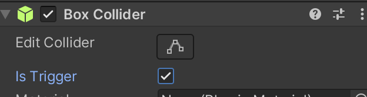
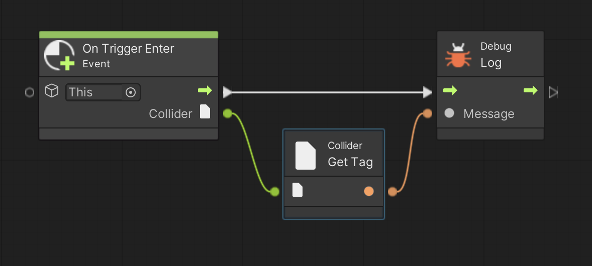

Unity にはトリガー (Trigger)という当たり判定処理方式も用意されています。
トリガーは目印やチェックポイントを通過した時など、透明またはすり抜け可能なゲームオブジェクトに触れた時に使う当たり判定処理です。
演習を行う前に準備をしましょう。
アセットフォルダの Scenes フォルダの中にシーンを新規作成し、シーン名を「Trigger Scene」にする。背景色は任意で構わない
新規作成したシーンへ移動する
ヒエラルキー右クリック → 3D Object → Sphere で球を新規作成し、名前を「JIBUN」、Position を (0,3,0)にする
JIBUN に Rigidbody をアタッチする。
ヒエラルキー右クリック → 3D Object → Cube で立方体を新規作成し、名前を「HAKO1」、Position を (0,0,0)にする
ヒエラルキー右クリック → 3D Object → Cube で立方体を新規作成し、名前を「HAKO2」、Position を (0,-3,0)にする
次にこちらを参考にして Visual Scripting のセットアップもします。
Scripts フォルダの中に入り、空いている部分を右クリックしてメニューを表示し、Create → Visual Scripting → Script Graph を選ぶ
Scripts フォルダ内に「New Script Graph」というアセットが出来るので「Trigger Script」に名前を変更する
JIBUN に Script Machine コンポーネントをアタッチする
Script Machine の Graph の None と書いてあるセルに Trigger Script をドロップする
トリガー機能を使うためにはゲームオブジェクトをすり抜け可能にする必要があります。
以下の手順で HAKO1 と HAKO2 をすり抜け可能にしてください。
ついでに hako1、hako2 というタグもつけておきましょう。
ヒエラルキーの HAKO1 をクリックしてインスペクターを表示する
インスペクターの Box Collider コンポーネントの中にある Is Trigger にチェックを入れる(図1)
図1. Is Trigger 設定
前ページを参考にして hako1 というタグを付ける
HAKO2 に対しても同様に Is Trigger をチェックして hako2 というタグを付ける
この時点で試しに実行して下さい。
JIBUN が HAKO1 と HAKO2 をすり抜けて落ちていったと思います。
では次は図2のスクリプトを実行してみましょう。
通常の当たり判定と同様に、トリガーでは On Trigger Enter というイベントを使って当たり判定処理を行うことが出来ます。
図2 の例では JIBUN が TAMA1、TAMA2 に触れた時にそれぞれのタグを表示してあります。
図2. トリガーによる当たり判定処理
